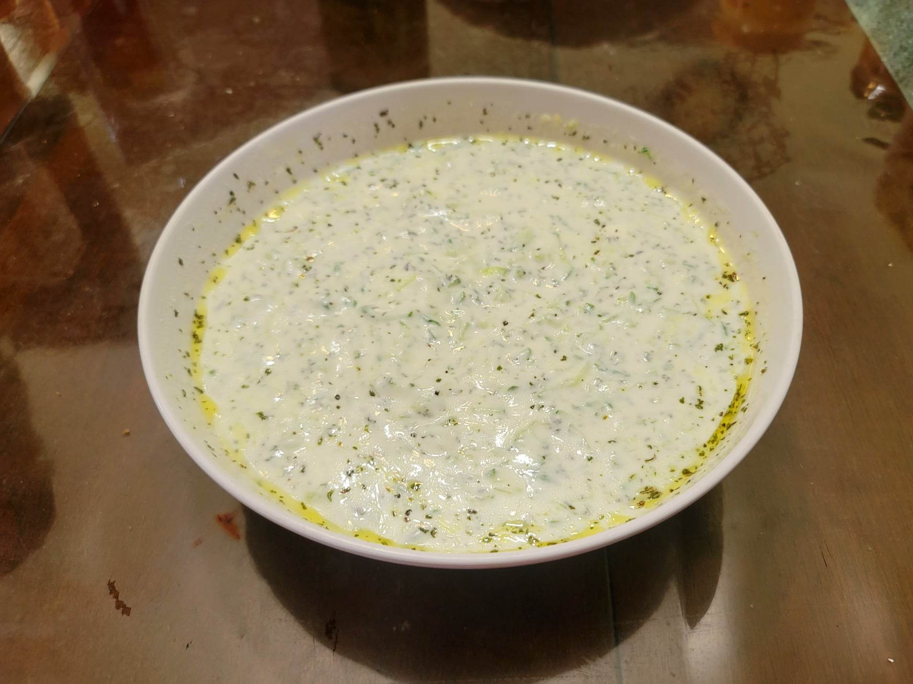

Cacık

Ingredients:
- 2 cups Yogurt
- 1 cup Water
- 4 Persian cucumbers
- 3 cloves Garlic, minced
- 1/2 tsp Salt
- 1/2 tbsp Dried mint
- 1 tbsp Olive oil
Instructions:
- Grate the cucumbers with a box grater. Then transfer to a cheese cloth and squeeze out as much liquid as you can.
- Whisk together all the other ingredients until very smooth. Then stir in the grated cucumbers. Taste and add salt if needed.
- Transfer to a fridge and let chill for 30 minutes or more to thicken. Serve cold.